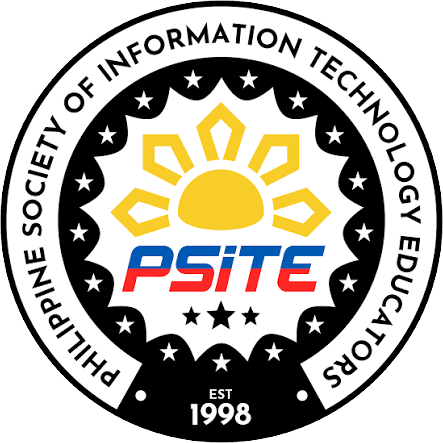
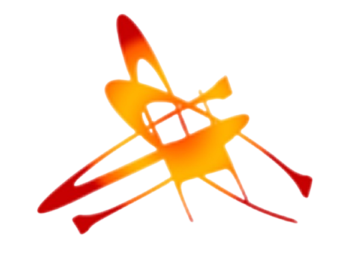

Accreditations & Affiliations
 Oracle AcademyDatabase & Enterprise Java Partner
Oracle AcademyDatabase & Enterprise Java Partner
Recognized and trusted
Our standards are recognized by regulators, accrediting bodies, and industry.
Regulatory
CHEDCenter of Development in Information Technology
Accrediting Bodies
PAASCUBS Computer Science • Level III (Valid until Aug 2030)
PAASCUBS Information Technology • Level III (Valid until Aug 2030)
Industry Partners & Affiliations
Cisco Networking AcademyAcademic & Certification Partner
Oracle AcademyDatabase & Enterprise Java Partner

Philippine Society of IT EducatorsPSITE Institutional Member
Computing Society of the PhilippinesCSP Academic Partner